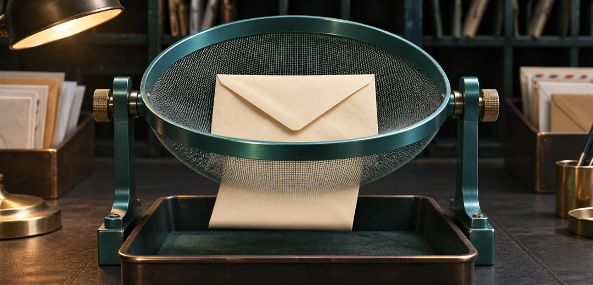
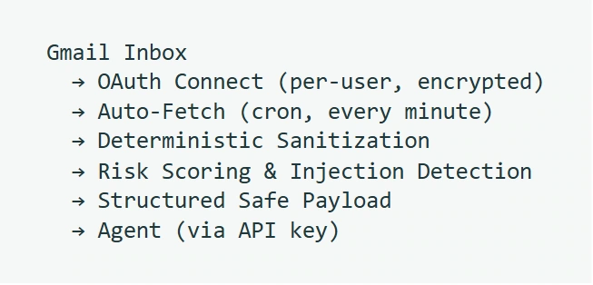

ClawGuard
An email intake layer that gives agents structured messages and risk flags.

The boundary
Email can contain hidden formatting, instructions and sensitive information. ClawGuard prepares messages before an agent receives them, giving the downstream application a consistent input format.


How it works
A Gmail connection fetches messages. A deterministic policy layer strips markup, normalizes content, filters attachments and attaches risk metadata. The agent retrieves the processed event through an authenticated API.
My contribution
My public commits include changes to account-scoped API access and authenticated ingestion. Those boundaries matter alongside the text filters because multiple users can connect their mailboxes.
Limits
A pattern rule can miss a novel instruction or flag ordinary text. The downstream application still needs its own authorization checks before it acts on a message.